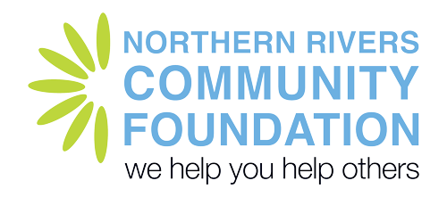

We believe when climate disasters hit, it’s the community that steps up first.
We are a network of grassroots, community-led groups working together to build disaster resilience across the Northern Rivers.

- Connect
- Share
- Care
60+ groups, one region, one network.
Community knowledge, lived experience and shared learning.

How we work
Through regular gatherings, deep conversations and shared experiences, the Resilience Alliance is building a community-led network focused on collective care, preparedness and regional strength.
Connect
60+ grassroots, community-led groups are connected together across the region so they can build trusting relationships with each other so they know who to contact when the next climate disaster hits.
Share
Sharing knowledge, experience, practical tools and resources across the network so everyone can benefit from what others have learned.
Care
Peer to peer support, reducing the load, removing duplication and placing a real value on the efforts of all.
Our Impact
- Impact highlight
- Impact highlight
- Impact highlight
Key impact highlights will be supplied by Eunice. This space is held for them.
What people say
“It's cutting edge. I don't really know whether this sort of thing has been tried before, certainly for community disaster response groups.”
Alliance participantMore positive comments from the gathering data will go here. They will be supplied by NRCRA.
Our Focus
Growing the Alliance
We are strengthening our network by clarifying who we are, why we come together and how we work. Through regular gatherings we are building a clearer picture of who is involved and how we connect.
Training and Resource Sharing
We are making knowledge, practical tools and training easier to find through our Resilience Alliance Community Knowledge Hub. Our training is led by experienced locals, with the aim of strengthening our network from within the community.
Peer Support and Self Care
Resilience work asks a lot of the people who do it, so we are committed to balanced wellbeing and collective care across our region. We are mapping the support already available, identifying good practice, with the aim to develop an adaptable wellbeing framework that groups can use to look after themselves and each other.
Funding and Collaborative Projects
We are working towards a more sustainable and collaborative approach to funding for resilience work across the region. Identifying shared opportunities we aim to reduce competition and increase collective impact.
Advocacy
We believe our collective voice is stronger than any single group’s. By understanding our own network, identifying key stakeholders and building advocacy skills among members, we are developing a collaborative approach to advocating for resilient communities across the region.
Meet the groups across the region
See who is in the network and where they work.
60+ groups, one region, one network.
Community knowledge, lived experience and shared learning.
Group video: placeholderOur Network
Placeholder map of the region. In the build this is the Alliance's own Google Map, with a pin for each member group.
All groups
- Sample group AMurwillumbah, TweedGrowing the Alliance
- Sample group BKyogle, KyogleGrowing the Alliance
- Sample group CGrafton, Clarence ValleyGrowing the Alliance
- Sample group DMullumbimby, ByronTraining and Resource Sharing
- Sample group ELismore, LismoreTraining and Resource Sharing
- Sample group FCasino, Richmond ValleyTraining and Resource Sharing
- Sample group GWardell, BallinaPeer Support and Self Care
- Sample group HUki, TweedPeer Support and Self Care
- Sample group INorth Lismore, LismorePeer Support and Self Care
- Sample group JWoodburn, Richmond ValleyFunding and Collaborative Projects
- Sample group KBallina, BallinaFunding and Collaborative Projects
- Sample group LBillinudgel, ByronFunding and Collaborative Projects
- Sample group MCoraki, Richmond ValleyAdvocacy
- Sample group NSouth Lismore, LismoreAdvocacy
- Sample group OTumbulgum, TweedAdvocacy
No groups match those filters.
Sample groups. In the build, one Google Sheet of groups drives both the map pins and this list, so updating a row updates both.
Our Stories
 Group story: video to come
Group story: video to come Group story: video to come
Group story: video to come Group story: video to come
Group story: video to come
Videos of groups from the gathering will sit here. The sizzle reel stands in until they are supplied.
“It's cutting edge. I don't really know whether this sort of thing has been tried before, certainly for community disaster response groups.”
Alliance participantMore positive comments from the gathering data will go here. They will be supplied by NRCRA.
We know communities are stronger when they’ve built trusted relationships together.
The Resilience Alliance was established in November 2023. Its roots lie in a run of compounding disasters: the 2017 floods, the 2019–20 bushfires, and the catastrophic floods and landslides of 2022. In each, local community organisers played a vital role in response, recovery and adaptation. Research in the years that followed found that these grassroots groups wanted stronger connections with each other for peer-to-peer support. That showed the need for regional collaboration in disaster resilience.
The Resilience Alliance supports a network of place-based resilience groups to develop their own local approaches to risk reduction, preparedness and recovery, for fire, flood, landslides and whatever comes next.
The Resilience Alliance helps government agencies, councils and emergency services deliver on the commitments of the NSW State Emergency Management Plan, State Disaster Mitigation Plan and regional resilience priorities by connecting formal systems with trusted, community-led action.
Our Journey
- 2022
Floods and disaster
Communities respond to the floods, showing local leadership and the need for stronger regional collaboration.
- 2023
Building connections
A Sydney Environment Institute and UCRH study documents community self organisation after the floods — the evidence base that leads participants to call for a regional alliance.
- 2024
Resilience Alliance established
The inaugural regional gathering with 96 participants from 40+ groups across the Northern Rivers formally establishes the Resilience Alliance.
Co-designing the future
Groups develop the Resilience Alliance’s distributed governance model and strategic priorities.
Funded by the University Centre for Rural Health.
- 2025
Capability in action
The Resilience Alliance trains 20 groups on spontaneous volunteer management systems, supporting groups post Cyclone Alfred.
Funded by the NSW Government’s Spontaneous Volunteering Program and Foundation for Regional and Rural Renewal.
- 2026
Connected, Prepared Communities
Disaster Ready Fund 3 investment supports the next stage of capability and resilience-building with 60 groups throughout the Northern Rivers.
Funded by the Australian Government and NSW Government.
Participatory granting project
17 groups receive up to $10,000 in funding as part of the first round of a newly developed participation funding process.
Funding by the NRMA Help Fund, Monash University and Northern Rivers Community Foundation.
Vision
Connected, collaborative Northern Rivers communities that are empowered to care for themselves and each other before, during and after disasters.
Purpose
To develop a self-sustaining, trusted Alliance of place-based, community-led resilience groups and organisations. The Alliance will share knowledge and resources; provide mutual support and wellbeing; take collective action, and advocate for identified community needs.
“It's cutting edge. I don't really know whether this sort of thing has been tried before, certainly for community disaster response groups.”
Alliance participantMore positive comments from the gathering data will go here. They will be supplied by NRCRA.
Distributed Governance Model
The Resilience Alliance recognises that groups and organisations in its network differ in size, capacity and access to power. We will endeavour to ensure every group and or organisation in the network has the opportunity to participate fairly and thus keeping the Resilience Alliance healthy.
The Steering Committee
Is the coordinating body for the Resilience Alliance. It is made up of representatives from resilience-related groups and organisations across the region, and operates by agreement among groups and organisations rather than by reporting to a separate incorporated parent body. The steering committee actively aims to maintain a network that reflects the geographic and community diversity of the region.
The Steering Committee comprises the following groups and organisations.
- Together Pottsville
- Murwillumbah CORE
- Resilient Uki
- South Golden Beach, New Brighton, Ocean Shores
- Main Arm Disaster Response
- Resilient Lismore
- Northern Rivers Community Foundation
- Plan C
- University Centre for Rural Health
Resilience Alliance Team
- Kathie HeymanNetwork Lead
- Milou MuiserCommunications, Events and Engagement
- Marlena Sue BasserCapacity Building Coordinator
- Claire McLiskyCapacity Building Coordinator
- Barbara WintersCapacity Building Coordinator
Photos to come.
Our Impact
Led by Eunice’s work. Draft layout while the key highlights are gathered.
- Impact highlight
- Impact highlight
- Impact highlight
Key impact highlights will be supplied by Eunice. This space is held for them.
What we are changing
From
- Dependence
- Fragmented organisations
- Competition for funding
- Isolated communities
To
- Cooperation
- Shared knowledge
- Local leadership
- Connected communities
Our projects
Connected and Prepared
Enabling regional readiness through the Resilience Alliance.
Supported by the Australian Government’s National Emergency Agency through the Disaster Ready Fund. At least 60 grassroots resilience groups will receive tailored governance support, shared digital tools, capacity building support, peer learning opportunities and strengthened regional collaboration.
Resourcing Community Resilience
Resources directed to the priorities communities identify themselves.
Supported by the NRMA Help Fund, with the Northern Rivers Community Foundation and Monash University’s Fire to Flourish initiative. Groups co-designed a participatory approach to collectively decide where resources can have the greatest impact.
Learning Together
Listening, reflecting and tracking change together.
With embedded researchers from the University Centre for Rural Health, our Monitoring, Evaluation, Accountability and Learning (MEAL) approach turns what we learn into action.
Condensed from the three project one-pagers.
Thanks to our funders
- Australian Governmentlogo to be added (follow the logo protocols)
- NSW Governmentlogo to be added (follow the logo protocols)

“It's cutting edge. I don't really know whether this sort of thing has been tried before, certainly for community disaster response groups.”
Alliance participantMore positive comments from the gathering data will go here. They will be supplied by NRCRA.